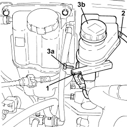

3330C30 BRAKE FLUID RESERVOIR - R + R AND WASH INSIDE
- Path
- Procedures > 33 BRAKES > 3330 HYDRAULIC BRAKING SYSTEM > 3330C BRAKE PUMP, RESERVOIR AND LOAD PROPORTIONING VALVE > 3330C30 BRAKE FLUID RESERVOIR - R + R AND WASH INSIDE
- Kind
- repair procedure (removal / refitting; the operation number is the code)
- Applies to
- all engines; all production periods
- Interactive page
- https://sloeber94.github.io/elrnDB-aBrrSpdr/en/#/946002133
Applies to: all engines; all production periods
 Removing
Removing
 Refitting
Refitting- Drain the brake-clutch fluid into a suitable container.
- Unscrew the engine coolant reservoir fixing bolts and move it aside.
1. Press the clips and remove the minimum brake-clutch fluid level warning light switch.
2. Disconnect the clutch system supply pipe.
3. Undo the bolt (3a) and remove the brake fluid reservoir (3b) from the brake pump.

Applies to: all engines; all production periods
Refitting
Removing- Place the brake-clutch fluid reservoir in its housing and secure it using the bolt.
- Connect the clutch system supply pipe.
- Place the minimum brake-clutch fluid level warning light switch in its housing.
- Fit the engine cooling reservoir in place and secure it using the bolts.
Op. 0010T64 BRAKE AND/OR CLUTCH FLUID CHECK LEVEL AND TOP UP AS NECESSARY
Topics linked from this page (2)
- 0010T64 BRAKE AND/OR CLUTCH FLUID CHECK LEVEL AND TOP UP AS NECESSARY
- 0010T65 HYDRAULIC BRAKE SYSTEM - BLEED AIR